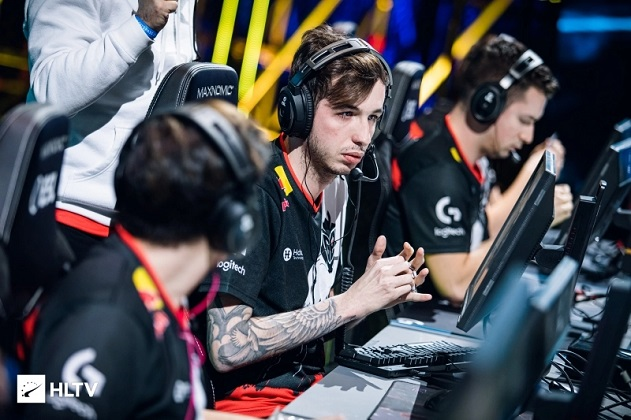
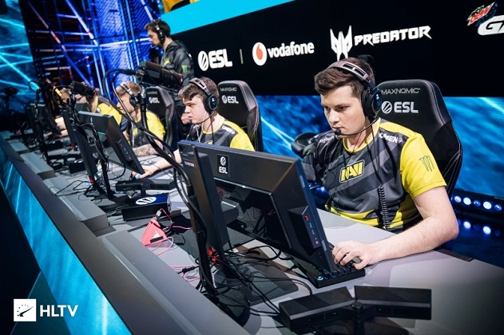
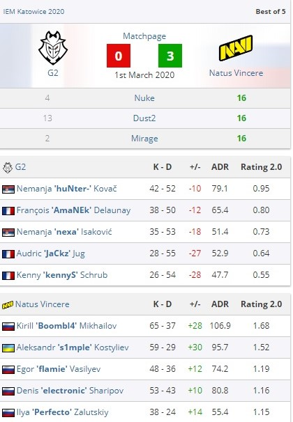
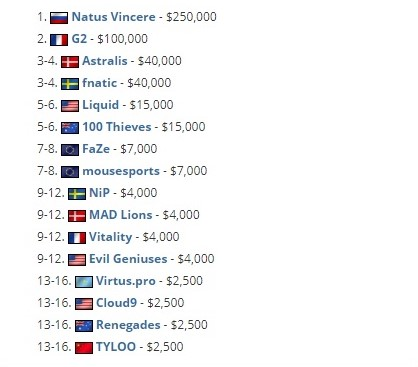

С двумя доминирующими победами на карте - Nuke и Mirage и жесткой победой на Dust2, Natus Vincere претендовал на победу 3-0 над G2 в гранд-финале IEM Katowice, чтобы обеспечить себе титул в Польше.
Только три организации были чемпионами в Катовице с момента начала CS: GO, польских легенд Virtus.pro, fnatic с двумя разными составами и Astralis- один раз с Эмилем "Magisk" Reif и один раз с Маркусом "Kjaerbye" Kjaerbye. Выход Natus Vincere и G2 в гранд-финал IEM Katowice 2020 означал, что новый чемпион будет коронован в Польше, а новое имя войдет в гонку Intel Grand Slam race за 1 000 000$,присоединившись к таким, как mousesports и Evil Geniuses.
Двумя лучшими исполнителями на мероприятии, идущем в гранд-финал, были Кенни "kennyS" Шруб и Александр" s1mple " Костылев, два опытных игрока AWP, оба надеялись добавить свой первый титул IEM Katowice к своим именам. Несмотря на впечатляющую форму G2 за последний месяц и непобежденный забег на турнире, топот Natus Vincere Astralis в полуфинале позволил им принять титул фаворитов, идущих в матч.
Серия началась на карте Nuke,которую выбрали G2, где Natus Vincere поставили стену, заявив о победе 16-4 с Кириллом "Boombl4" Михайловым, достигшим личного рекорда рейтинга. На второй карте Dust2 счет шел качелями ,но с активнвм s1mple и Ильей" Perfecto " Залуцким, показывающим сцепление, сторона СНГ продлила их серию до 2-0. Mirage был похож на Nuke, поскольку Natus Vincere имел почти идеальную CT-сторону, чтобы претендовать на прямую победу в серии.
Выиграв IEM Katowice, Natus Vincere обеспечили себе первую крупную победу на турнире с 7-го сезона StarSeries i-League в апреле 2019 года, когда Данило "Zeus" Тесленко и Иоанн "Edward" Сухарев все еще были частью их состава. С Boombl4 и Perfecto, поднявшими свой первый подобный трофей, Natus Vincere также присоединились к гонке Intel Grand Slam race.
Natus Vincere начали яростно на CT стороне карты Nuke, выбора карты G2, с Boombl4, ведущей путь для российско-украинской стороны. В игре лидер взял хет-трик в пистолете, а затем двойное и тройное убийство в первых двух раундах винтовки, чтобы создать Natus Vincere для большого лидерства в обороне.
G2 были сбиты 8-0 и только положили бомбу один раз в половине, оказавшись полностью заблокированными, прежде чем, наконец, попасть на борт с сильным местом выполнения. Однако, поскольку ни один из их игроков не выжил и проиграл в последующем, G2 снова боролась экономически, что только облегчило жизнь Natus Vincere.
Boombl4 продолжает свою выдающуюся работу, отправляя 28K на 6D и восемь открывающих убийств, Natus Vincere закончила половину со счетом 14-1. С помощью стратегии ventdive в пистолете Natus Vincere достигла точки карты, превратив ее в победу 16-4 после тройного убийста Дениса"electronic"Шарипова.

Клач electronica 1vs2 глоком на Dust2 быстро включил G2, который выиграл закуп хорошей амуниции , чтобы начать наращивать импульс впервые в минуты игры. Nemanja "huNter-" Kovač был выдающимся игроком с 15 убийствами в девяти раундах, что привело его команду к лидерству 7-2. Natus Vincere, не сумев попасть на доску с их исполнениями A, наконец взломали код в десятом раунде, выиграв раунд, чтобы сломать стрик G2 и економику.
После спокойного старта на Nuke, Perfecto возглавил доску для Natus Vincere, когда они вернулись, чтобы закончить половину в лидерстве, 8-7. После переключения, force-buy боях, завязавшихся, с "Natus Vincere" берет верх. Они отпустили на сторону CT, чтобы достичь лидерства 13-8, когда Nemanja "nexa" Isaković выиграл решающий 1v3, вдохновив возвращение с Франко-сербской стороны. Они воспользовались слабостями в отношении А bombsite и связали пять вместе, чтобы сравнять счет, 13-13, но споткнулись на последнем препятствии. Три ретейла были взяты Natus Vincere, чтобы претендовать на Dust2, клачем 1v2 от Perfecto, заканчивается вторая карта.

Поскольку Natus Vincere требовалась всего одна карта, чтобы претендовать на титул в Польше, действие переместилось в Mirage, где G2 имел еще одно грубое начало. На этот раз именно Егор "flamie" Васильев был причиной их проблем, заявив 12 убийств в первых четырех раундах карты после завершения Dust2 всего с 10. Natus Vincere не показывал никаких признаков остановки там, блокируя подходы к Mirage, чтобы потребовать еще одну половину 14-1 CT. После 15 раундов у s1mple была только одна смерть на его имя, в то время как Perfecto был безупречен, 14K-0D.
G2 претендовал на пистолетный раунд на стороне CT, но никакого импульса не было построено, поскольку форс-бай у них не получился то Natus Vincere, поставили точку на третей карте, 16-2, и сделав ее 3-0 в серии.

Итоговая таблица участников IEM Katowice 2020: 